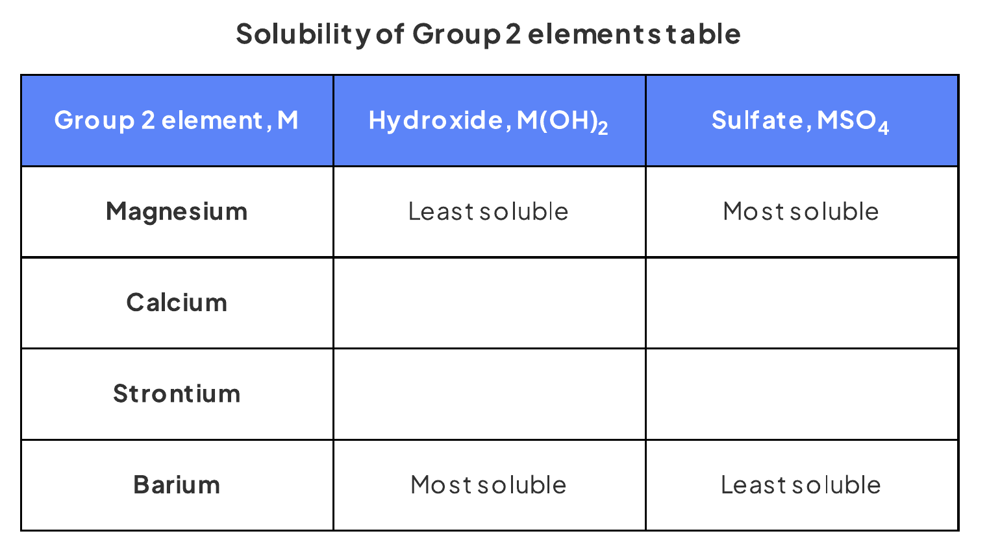

27 Group 2
Similarities, trends and compounds of magnesium to barium
27 Group 2
本章对应 CIE 9701 2025–2027 syllabus 的 27.1 Similarities - Trends in the Properties of the Group 2 Metals, Magnesium to Barium, - Their Compounds (AL)。重点是 Group 2 离子半径、极化作用、热稳定性、溶解度以及 lattice energy / hydration enthalpy 对溶解焓的影响。
Learning objectives
学完本章后，你应该能够：
- describe and explain the trend in thermal stability of Group 2 nitrates and carbonates;
- explain the trend using ionic radius, charge density and polarisation of the large anion;
- describe and explain the variation in solubility and \(\Delta H^\ominus_{\mathrm{sol}}\) of Group 2 hydroxides and sulfates;
- use the relative changes in lattice energy and hydration enthalpy to explain these solubility trends;
- write equations for Group 2 reactions with oxygen, water, steam, dilute acids and thermal decomposition of their compounds;
- apply the trends to unfamiliar ions and compounds, including peroxides and transition-element comparisons.
27.1 Group 2 ions and thermal stability
Ionic radius, charge density and polarisation
All Group 2 metals form \(\ce{M^{2+}}\) ions by losing the two electrons in their outer shell. Ionic radius increases down the group because each successive element has an additional occupied electron shell. The charge remains \(+2\), so the charge density decreases down the group.
The small, high-charge-density cations near the top of the group have a strong polarising effect on large anions such as \(\ce{NO3^-}\) and \(\ce{CO3^{2-}}\). The cation attracts electron density towards itself and distorts the anion. This weakens the N–O or C–O bonds, making thermal decomposition easier.
Down Group 2, the cation becomes larger and its charge density falls. Its polarising effect becomes weaker, so the anion is less distorted and the compound is more thermally stable.
Thermal stability of nitrates and carbonates
Both Group 2 nitrates and carbonates become more thermally stable down the group. More heat is therefore needed to decompose the compounds further down the group.
The common explanation is:
- ionic radius of \(\ce{M^{2+}}\) increases;
- charge density decreases;
- polarisation of the nitrate or carbonate ion decreases;
- the N–O or C–O bonds are less weakened;
- a higher temperature is required for decomposition.
Typical equations are:
\[\ce{MCO3(s) -> MO(s) + CO2(g)}\]
\[\ce{2M(NO3)2(s) -> 2MO(s) + 4NO2(g) + O2(g)}\]
The oxidation number of nitrogen in a nitrate ion is \(+5\); in the nitrogen dioxide product it is \(+4\).
Worked example · Note knowledge check
Predicting relative thermal stability
Zinc carbonate and lead carbonate are compared with calcium carbonate. The ionic radii are \(\ce{Ca^{2+}}\): 0.099 nm, \(\ce{Zn^{2+}}\): 0.074 nm and \(\ce{Pb^{2+}}\): 0.120 nm. Predict the relative thermal stability of zinc carbonate and lead carbonate.
Zinc ions have a smaller radius and higher charge density than calcium ions, so \(\ce{Zn^{2+}}\) polarises the carbonate ion more strongly. Zinc carbonate is therefore less thermally stable than calcium carbonate.
Lead ions have a larger radius and lower charge density, so \(\ce{Pb^{2+}}\) polarises the carbonate ion less strongly. Lead carbonate is therefore more thermally stable than calcium carbonate.
Final answer: \(\ce{ZnCO3}\) is less stable and \(\ce{PbCO3}\) is more stable than \(\ce{CaCO3}\).
27.2 Reactions and compounds of Group 2
Reactions of the metals
Reactivity with water increases down Group 2. Beryllium does not react with water under ordinary conditions, magnesium reacts slowly with hot water and more readily with steam, while calcium, strontium and barium react with cold water.
Useful equations include:
\[\ce{M(s) + 2H2O(l) -> M(OH)2(s) + H2(g)}\]
\[\ce{Mg(s) + H2O(g) -> MgO(s) + H2(g)}\]
\[\ce{M(s) + 2HCl(aq) -> MCl2(aq) + H2(g)}\]
The hydroxide formed makes the solution alkaline, commonly giving a pH around 10–12. Hydrogen is identified with a lighted splint, which gives a squeaky pop.
Formulae and reactions of Group 2 compounds
Group 2 ions have charge \(+2\), so their common compounds have these formulae:
| Compound | General formula | Example |
|---|---|---|
| oxide | \(\ce{MO}\) | \(\ce{MgO}\) |
| hydroxide | \(\ce{M(OH)2}\) | \(\ce{Ba(OH)2}\) |
| carbonate | \(\ce{MCO3}\) | \(\ce{CaCO3}\) |
| nitrate | \(\ce{M(NO3)2}\) | \(\ce{Sr(NO3)2}\) |
| sulfate | \(\ce{MSO4}\) | \(\ce{MgSO4}\) |
With acids:
\[\ce{MCO3(s) + 2HCl(aq) -> MCl2(aq) + H2O(l) + CO2(g)}\]
\[\ce{M(OH)2(s) + H2SO4(aq) -> MSO4(aq) + 2H2O(l)}\]
Calcium sulfate is sparingly soluble, so \(\ce{CaCO3}\) can become coated with \(\ce{CaSO4}\) when sulfuric acid is used. The coating can slow or stop further reaction.
27.3 Solubility and enthalpy change of solution
Hydroxides and sulfates: opposite solubility trends
The solubility of Group 2 hydroxides increases down the group, while the solubility of Group 2 sulfates decreases down the group. Magnesium hydroxide is sparingly soluble; barium hydroxide is the most soluble hydroxide. Barium sulfate is insoluble; magnesium sulfate is the most soluble sulfate.

Lattice energy, hydration enthalpy and \(\Delta H^\ominus_{\mathrm{sol}}\)
The standard enthalpy of solution, \(\Delta H^\ominus_{\mathrm{sol}}\), is the enthalpy change when one mole of an ionic solid dissolves in sufficient water to form a dilute solution under standard conditions.
The energy relationship is:
\[\Delta H^\ominus_{\mathrm{sol}} = \Delta H^\ominus_{\mathrm{hyd}} - \Delta H^\ominus_{\mathrm{latt}}\]
Here \(\Delta H^\ominus_{\mathrm{latt}}\) is the lattice enthalpy of formation, so it is negative, while hydration enthalpies are also negative. As ions become larger down the group, both lattice enthalpy and hydration enthalpy become less exothermic.
For hydroxides, the lattice enthalpy falls faster than the hydration enthalpy of the cation. The enthalpy of solution becomes more negative or less positive, so solubility increases.
For sulfates, the large sulfate ion changes the balance: the hydration enthalpy of the cation falls more than the lattice enthalpy. The enthalpy of solution becomes more positive or less negative, so solubility decreases.
Worked example · Note calculation
Calculating enthalpy changes of solution
The lattice enthalpies of \(\ce{Mg(OH)2}\) and \(\ce{Sr(OH)2}\) are \(-2993\) and \(-2467\ \mathrm{kJ\,mol^{-1}}\). The hydration enthalpies of \(\ce{Mg^{2+}}\) and \(\ce{Sr^{2+}}\) are \(-1890\) and \(-1414\ \mathrm{kJ\,mol^{-1}}\), and \(\ce{OH^-}\) is \(-550\ \mathrm{kJ\,mol^{-1}}\). Calculate \(\Delta H^\ominus_{\mathrm{sol}}\) for each hydroxide.
Use:
\[\Delta H^\ominus_{\mathrm{sol}} = \sum\Delta H^\ominus_{\mathrm{hyd}} - \Delta H^\ominus_{\mathrm{latt}}\]
For magnesium hydroxide, there are two hydroxide ions:
\[\Delta H^\ominus_{\mathrm{sol}} = [-1890 + 2(-550)] - (-2993)\]
\[\Delta H^\ominus_{\mathrm{sol}} = +3\ \mathrm{kJ\,mol^{-1}}\]
For strontium hydroxide:
\[\Delta H^\ominus_{\mathrm{sol}} = [-1414 + 2(-550)] - (-2467)\]
\[\Delta H^\ominus_{\mathrm{sol}} = -47\ \mathrm{kJ\,mol^{-1}}\]
Final answer: \(\ce{Mg(OH)2}\): \(+3\ \mathrm{kJ\,mol^{-1}}\); \(\ce{Sr(OH)2}\): \(-47\ \mathrm{kJ\,mol^{-1}}\).
Chapter checklist
Structured questions
27 Group 2 - Structured Questions
本页保留 6.1 Group 2 (A Level Only) 题包中的全部 Structured Questions，按 Easy、Medium、Hard 分组。每题保留完整英文题目、所有分问、题目图（如原 PDF 有可独立提取的图）以及完整 model-answer steps。
6.1 Group 2 (A Level Only) - Easy
Example 1 · Carbonates and thermal stability · 6.1 SQ Easy Q1
This question is about Group 2 carbonates.
Magnesium carbonate is used as an antacid and used to treat heartburn.
(a)
- Write the chemical formula of magnesium carbonate.
[1 mark] - Write a balanced symbol equation for the reaction of magnesium carbonate with dilute nitric acid.
[2 marks]
(b)
From the list below, identify the compound that will decompose at the lowest temperature.
- calcium carbonate
- strontium carbonate
- barium carbonate
[1 mark]Write a balanced symbol equation for the decomposition of your chosen carbonate.
[1 mark]
(c) Group 2 nitrates become more thermally stable going down the group. Explain why. [2 marks]
Show mark scheme / model answer
(a)(1) \(\ce{MgCO3}\).
[1](a)(2)
\[\ce{MgCO3(s) + 2HNO3(aq) -> Mg(NO3)2(aq) + CO2(g) + H2O(l)}\]
Correct formulae and correct balancing.
[2](b)(1) Calcium carbonate.
[1](b)(2)
\[\ce{CaCO3(s) -> CaO(s) + CO2(g)}\]
[1](c) Nitrate thermal stability increases down Group 2. The ionic radius of the cation increases, so its charge density and polarising power decrease. The nitrate ion is less polarised and the N–O bonds are less weakened.
[2]
Example 2 · Reactions and sulfate solubility · 6.1 SQ Easy Q2
This question is about Group 2 compounds.
Strontium will react with water.
(a)
- Write a balanced symbol equation for the reaction.
[1 mark] - Describe a test to identify the gas produced.
[1 mark]
(b) Calcium hydroxide reacts with sulfuric acid to produce calcium sulfate and water.
- Write the balanced symbol equation for this reaction.
[1 mark] - Describe the trend in the solubility of the Group 2 sulfates.
[1 mark]
(c) The trend in solubility of the Group 2 sulfates is due to the lattice energy, \(\Delta H^\ominus_{\mathrm{latt}}\), and enthalpy change of hydration, \(\Delta H^\ominus_{\mathrm{hyd}}\), of the Group 2 sulfates changing. Describe the trend in \(\Delta H^\ominus_{\mathrm{latt}}\) and \(\Delta H^\ominus_{\mathrm{hyd}}\) of Group 2 sulfates going down Group 2. [2 marks]
Show mark scheme / model answer
(a)(1)
\[\ce{Sr(s) + 2H2O(l) -> Sr(OH)2(s) + H2(g)}\]
[1](a)(2) Collect the gas and test it with a lighted splint. Hydrogen gives a squeaky pop.
[1](b)(1)
\[\ce{Ca(OH)2(s) + H2SO4(aq) -> CaSO4(s) + 2H2O(l)}\]
[1](b)(2) Solubility decreases down Group 2.
[1](c) Both lattice energy and enthalpy change of hydration decrease down the group. The hydration enthalpy decreases by a larger amount than the lattice energy, so \(\Delta H^\ominus_{\mathrm{sol}}\) becomes more endothermic.
[2]
Example 3 · Water reactions and nitrate decomposition · 6.1 SQ Easy Q3
The elements in Group 2 from Mg to Ba can be used to show the trends in properties down a group in the Periodic Table. The Group 2 elements react with water.
(a)
- State the trend in reactivity with water of the elements down Group 2 from Mg to Ba.
[1 mark] - Predict a possible pH for the solutions formed when Group 2 elements are added to water.
[1 mark]
(b) Give the formula of the hydroxide of the element in Group 2 from Mg to Ba that is most soluble in water. [1 mark]
(c) A trend in the thermal decomposition of Group 2 nitrates can also be observed.
- Give the oxidation number of nitrogen in \(\ce{Ca(NO3)2}\).
[1 mark] - Write an equation for the thermal decomposition of \(\ce{Ca(NO3)2}\).
[2 marks] - State the trend in thermal stability of Group 2 nitrates.
[1 mark]
Show mark scheme / model answer
(a)(1) Reactivity with water increases down Group 2.
[1](a)(2) A possible pH is 10–12.
[1](b) \(\ce{Ba(OH)2}\).
[1](c)(1) Nitrogen is in oxidation state \(+5\).
[1](c)(2)
\[\ce{2Ca(NO3)2(s) -> 2CaO(s) + 4NO2(g) + O2(g)}\]
[2](c)(3) Thermal stability increases down Group 2.
[1]
6.1 Group 2 (A Level Only) - Medium
Example 4 · Strontium nitrate and polarisation · 6.1 SQ Medium Q1
This question is about Group 2 nitrates.
Strontium nitrate is a Group 2 nitrate used to produce a colour in fireworks.
(a)
- Give the formula of strontium nitrate.
[1 mark] - Give the colour that strontium nitrate will give in fireworks.
[1 mark]
(b)
- Write an equation for the reaction that occurs when strontium nitrate is heated. You should include state symbols.
[2 marks] - Give one observation of this reaction.
[1 mark]
(c) The nitrate ion, \(\ce{NO3^-}\), contains a dative covalent bond. Complete the following ‘dot-and-cross’ diagram of the bonding in the nitrate ion.
Use the following code for your electrons:
- • electrons from oxygen
- x electrons from nitrogen
- □ added electron(s) responsible for the overall negative charge
[3 marks]
(d) Describe and explain the trend in thermal stabilities of the nitrates of the Group 2 elements. [3 marks]
Show mark scheme / model answer
(a)(1) \(\ce{Sr(NO3)2}\).
[1](a)(2) Red or scarlet.
[1](b)(1)
\[\ce{2Sr(NO3)2(s) -> 2SrO(s) + 4NO2(g) + O2(g)}\]
Correct formulae and balancing.
[2](b)(2) Brown gas is produced, or a white precipitate forms.
[1](c) Complete the diagram with a dative covalent bond to an oxygen atom using two electrons from nitrogen; show eight electrons around nitrogen in one double bond and two single bonds; show a total of 24 outer-shell electrons including one added electron symbol for the overall \(-1\) charge.
[3](d) Thermal stability increases down Group 2. The cation radius increases and charge density decreases, so polarisation or distortion of the nitrate ion decreases. The N–O bonds are less weakened and more heat is required for decomposition.
[3]
Example 5 · Magnesium, sulfates and hydroxides · 6.1 SQ Medium Q2
Magnesium is a Group 2 metal.
(a) Write an equation, including state symbols, for the reaction between:
- magnesium and steam;
[1 mark] - magnesium and sulfuric acid.
[1 mark]
(b) Magnesium sulfate is soluble in water. Describe and explain how the solubilities of the sulfates of the Group 2 elements vary down the group. [4 marks]
(c) The following table lists some enthalpy changes for magnesium and strontium compounds.
| Enthalpy change / \(\mathrm{kJ\,mol^{-1}}\) | Value for magnesium | Value for strontium |
|---|---|---|
| lattice enthalpy of \(\ce{M(OH)2}\) | \(-2993\) | \(-2467\) |
| enthalpy change of hydration of \(\ce{M^{2+}(g)}\) | \(-1890\) | \(-1414\) |
| enthalpy change of hydration of \(\ce{OH^-(g)}\) | \(-550\) | \(-550\) |
Use the above data to calculate values of \(\Delta H^\ominus_{\mathrm{sol}}\) for \(\ce{Mg(OH)2}\) and \(\ce{Sr(OH)2}\). [2 marks]
(d) Use your results from part (c) to suggest whether \(\ce{Sr(OH)2}\) is more or less soluble in water than \(\ce{Mg(OH)2}\), assuming all other factors are the same. [2 marks]
Show mark scheme / model answer
(a)(1)
\[\ce{Mg(s) + H2O(g) -> MgO(s) + H2(g)}\]
[1](a)(2)
\[\ce{Mg(s) + H2SO4(aq) -> MgSO4(aq) + H2(g)}\]
[1](b) Solubility decreases down Group 2. Both lattice energy and hydration enthalpy decrease down the group, but the hydration enthalpy decreases by a larger amount. Therefore \(\Delta H^\ominus_{\mathrm{sol}}\) becomes more endothermic and the sulfates become less soluble.
[4](c)
\[\Delta H^\ominus_{\mathrm{sol}}(\ce{Mg(OH)2})=[-1890+2(-550)]-(-2993)=+3\ \mathrm{kJ\,mol^{-1}}\]
\[\Delta H^\ominus_{\mathrm{sol}}(\ce{Sr(OH)2})=[-1414+2(-550)]-(-2467)=-47\ \mathrm{kJ\,mol^{-1}}\]
[2](d) \(\ce{Sr(OH)2}\) is more soluble because its enthalpy of solution is more exothermic or more negative.
[2]
Example 6 · Carbonates and transition elements · 6.1 SQ Medium Q3
This question is about Group 2 carbonates.
Group 2 carbonates can react with acids.
(a)
- Compare the reaction of calcium carbonate with hydrochloric acid and sulfuric acid.
[2 marks] - Write an equation for the reaction between calcium carbonate and sulfuric acid, including state symbols.
[1 mark]
(b) Describe and explain the trend observed in the thermal stability of the carbonates of the Group 2 elements. [3 marks]
(c) The ionic radii of three ions are shown below.
| Ion | Ionic radius / nm |
|---|---|
| \(\ce{Ca^{2+}}\) | 0.099 |
| \(\ce{Zn^{2+}}\) | 0.074 |
| \(\ce{Pb^{2+}}\) | 0.120 |
Suggest how the thermal stabilities of zinc carbonate and lead carbonate might compare to that of calcium carbonate. [2 marks]
(d) Zinc is found in the d-block of the Periodic Table but is not a transition element.
- Explain why zinc is not classed as a transition element.
[1 mark] - Describe three characteristic chemical properties of transition elements that are not shown by Group 2 elements.
[3 marks]
Show mark scheme / model answer
(a)(1) Calcium carbonate reacts with both acids to form a salt, carbon dioxide and water. Calcium chloride is soluble, but calcium sulfate is insoluble or forms an insoluble coating on the carbonate.
[2](a)(2)
\[\ce{CaCO3(s) + H2SO4(aq) -> CaSO4(s) + H2O(l) + CO2(g)}\]
[1](b) Thermal stability increases down Group 2. The cation radius increases and charge density decreases, so the carbonate ion is less polarised or distorted. The C–O bonds are less weakened and more heat is required for decomposition.
[3](c) Zinc carbonate is less thermally stable than calcium carbonate because \(\ce{Zn^{2+}}\) is smaller and has greater charge density. Lead carbonate is more thermally stable because \(\ce{Pb^{2+}}\) is larger and has lower charge density.
[2](d)(1) Zinc forms an ion with a complete \(d^{10}\) subshell, so it does not form a stable ion with an incomplete d-subshell.
[1](d)(2) Any three: forms coloured ions or compounds; has variable oxidation states; forms complex ions; acts as or is used as a catalyst.
[3]
Example 7 · Hydroxide solubility and enthalpy of solution · 6.1 SQ Medium Q4
This question is about Group 2 hydroxides.
Samples of magnesium, calcium, strontium and barium are reacted with water to form their hydroxides. The resulting solutions are then filtered to collect the precipitates.
(a) Explain the trend in the expected mass for the precipitates. [2 marks]
(b) The table shows the solubility data for the Group 2 metal hydroxides.
| Group 2 metal hydroxide | Solubility / \(\mathrm{g\,dm^{-3}}\) at 20 °C |
|---|---|
| Magnesium hydroxide | 0.140 |
| Calcium hydroxide | 1.730 |
| Strontium hydroxide | 17.70 |
| Barium hydroxide | 38.90 |
A student determined that a \(50\ \mathrm{cm^3}\) solution of an unknown Group 2 metal hydroxide contained \(802\ \mathrm{mg}\) of the metal hydroxide. Identify the metal hydroxide in the unknown sample. [2 marks]
(c) Write an equation for the reaction between magnesium hydroxide and sulfuric acid. You should include state symbols. [2 marks]
(d) The solubility of Group 2 hydroxides increases going down the group because the enthalpy of solution, \(\Delta H^\ominus_{\mathrm{sol}}\), gets more exothermic.
- Define the term enthalpy of solution, \(\Delta H^\ominus_{\mathrm{sol}}\).
[2 marks] - Explain why going down Group 2 the enthalpy of solution gets more exothermic.
[3 marks]
Show mark scheme / model answer
(a) Magnesium hydroxide gives the greatest mass of precipitate and the mass decreases down the group. This is because hydroxide solubility increases down Group 2, so more remains dissolved for the lower members.
[2](b)
\[0.802\ \mathrm{g\ in\ }50\ \mathrm{cm^3}\]
\[0.802\times20=16.04\ \mathrm{g\,dm^{-3}}\]
The closest value is \(17.70\ \mathrm{g\,dm^{-3}}\), so the unknown is \(\ce{Sr(OH)2}\).
[2](c)
\[\ce{Mg(OH)2(s) + H2SO4(aq) -> MgSO4(aq) + 2H2O(l)}\]
[2](d)(1) The enthalpy change when one mole of an ionic solid dissolves in sufficient water to form a dilute solution under standard conditions.
[2](d)(2) Down the group, hydration enthalpy becomes less exothermic and lattice energy also becomes less exothermic. For hydroxides, the decrease in lattice energy is greater than the decrease in hydration enthalpy, so \(\Delta H^\ominus_{\mathrm{sol}}\) becomes more negative or more exothermic.
[3]
6.1 Group 2 (A Level Only) - Hard
Example 8 · Redox, ionisation energy and peroxide stability · 6.1 SQ Hard Q1
This question is about magnesium.
Magnesium forms a nitrate, \(\ce{Mg(NO3)2}\), which decomposes on heating as shown below:
\[\ce{2Mg(NO3)2(s) -> 2MgO(s) + 4NO2(g) + O2(g)}\]
(a) Using oxidation numbers, explain why the reaction involves both oxidation and reduction. [3 marks]
(b) The values for the first, second and third ionisation energies of magnesium are shown below.
| Ionisation energy | Value / \(\mathrm{kJ\,mol^{-1}}\) |
|---|---|
| First ionisation energy | 738 |
| Second ionisation energy | 1451 |
| Third ionisation energy | 7732 |
- Write an equation for the second ionisation energy of magnesium.
[2 marks] - Explain the trend in the first three ionisation energies of magnesium.
[3 marks] - Explain why magnesium has a greater second ionisation energy than barium.
[3 marks]
(c) Metal peroxides contain the \(\ce{O-O^{2-}}\) ion. The peroxides of the Group 2 elements, \(\ce{MO2}\), decompose in a similar way to Group 2 metal carbonates.
- Write an equation for the thermal decomposition of strontium peroxide, \(\ce{SrO2}\).
[1 mark] - Suggest how the temperature at which thermal decomposition of \(\ce{MO2}\) occurs varies down Group 2. Explain your answer.
[3 marks]
Show mark scheme / model answer
(a) Nitrogen changes from \(+5\) in nitrate to \(+4\) in \(\ce{NO2}\), so nitrogen is reduced. Oxygen changes from \(-2\) to \(0\) in \(\ce{O2}\), so oxygen is oxidised. Both oxidation and reduction occur.
[3](b)(1)
\[\ce{Mg+(g) -> Mg2+(g) + e-}\]
Correct equation and state symbols.
[2](b)(2) Ionisation energies increase because the nuclear charge increases while shielding is similar. There is a large jump between the second and third ionisation energies because the third electron is removed from an inner-shell \(2p\) orbital rather than the outer \(3s\) orbital.
[3](b)(3) Magnesium has a smaller ionic radius or fewer occupied shells than barium. There is less shielding and greater nuclear attraction for the second electron removed from magnesium.
[3](c)(1)
\[\ce{2SrO2(s) -> 2SrO(s) + O2(g)}\]
[1](c)(2) The decomposition temperature increases down the group. The cation charge density decreases, so the peroxide ion is less polarised and the O–O bond is less weakened.
[3]
Example 9 · Hydroxide solubility and \(K_{sp}\) · 6.1 SQ Hard Q2
The table below shows the solubility data for the Group 2 metal hydroxides.
| Group 2 metal hydroxide | Solubility / \(\mathrm{g\,dm^{-3}}\) at 20 °C |
|---|---|
| Magnesium hydroxide | 0.140 |
| Calcium hydroxide | 1.730 |
| Strontium hydroxide | 17.70 |
| Barium hydroxide | 38.90 |
(a) State and explain the factors responsible for the trend in the solubility of the Group 2 hydroxides. [3 marks]
(b) Milk of magnesia, \(\ce{Mg(OH)2}\), is used to neutralise stomach acid. Explain why \(\ce{Mg(OH)2}\) cannot be used to test for carbon dioxide but \(\ce{Ba(OH)2}\) can. [2 marks]
(c)
- Write an expression for the solubility product of \(\ce{Sr(OH)2}\).
[1 mark] - Use the solubility data above to calculate the value of \(K_{sp}\) at 293 K. Include units and show your working.
[3 marks]
(d) Use the solubility data above to calculate the pH of a saturated solution of \(\ce{Mg(OH)2}\) at 293 K. Show your working.
\(K_w\) at 293 K \(=0.681\times10^{-14}\ \mathrm{mol^2\,dm^{-6}}\). [5 marks]
Show mark scheme / model answer
(a) The factors are lattice energy and hydration energy. Both decrease down the group, but lattice energy decreases more than hydration energy. Therefore the enthalpy of solution becomes more negative or more exothermic, and hydroxide solubility increases.
[3](b) \(\ce{Mg(OH)2}\) is not sufficiently soluble to give a clear solution. \(\ce{Ba(OH)2}\) is soluble and reacts with carbon dioxide to form insoluble \(\ce{BaCO3}\):
\[\ce{Ba(OH)2(aq) + CO2(g) -> BaCO3(s) + H2O(l)}\]
[2](c)(1)
\[K_{sp}=[\ce{Sr^{2+}}][\ce{OH^-}]^2\]
[1](c)(2)
\[[\ce{Sr(OH)2}]=\frac{17.70}{121.6}=0.146\ \mathrm{mol\,dm^{-3}}\]
\[[\ce{Sr^{2+}}]=0.146,\qquad [\ce{OH^-}]=2(0.146)\]
\[K_{sp}=(0.146)(2\times0.146)^2=0.012\ \mathrm{mol^3\,dm^{-9}}\]
[3](d)
\[[\ce{Mg(OH)2}]=\frac{0.140}{58.3}=0.0024\ \mathrm{mol\,dm^{-3}}\]
\[\ce{Mg(OH)2(s) <=> Mg^{2+}(aq) + 2OH-(aq)}\]
\[[\ce{OH^-}]=2(0.0024)=0.0048\ \mathrm{mol\,dm^{-3}}\]
\[K_w=[\ce{H+}][\ce{OH^-}]\]
\[[\ce{H+}]=\frac{0.681\times10^{-14}}{0.0048}=1.42\times10^{-12}\ \mathrm{mol\,dm^{-3}}\]
\[pH=-\log_{10}[\ce{H+}]=11.8\text{–}11.85\]
[5]
Example 10 · Carbonate thermodynamics and \(K_{sp}\) · 6.1 SQ Hard Q3
Calcium carbonate can be thermally decomposed to make calcium oxide.
\[\ce{CaCO3(s) -> CaO(s) + CO2(g)}\qquad \Delta H=+178\ \mathrm{kJ\,mol^{-1}}\]
The standard entropies are:
| Substance | \(\mathrm{S^\ominus / J\,K^{-1}\,mol^{-1}}\) |
|---|---|
| \(\ce{CaCO3(s)}\) | 89 |
| \(\ce{CaO(s)}\) | 40 |
| \(\ce{CO2(g)}\) | 214 |
(a)
- Use the information in the table to show that calcium carbonate is stable at room temperature (\(25\ ^\circ\mathrm{C}\)).
[4 marks] - Calculate the minimum temperature needed to decompose calcium carbonate.
[2 marks]
(b) Describe and explain the trend that is observed in the thermal decomposition of the Group 2 carbonates. [3 marks]
(c)
- Write an equation to show the equilibrium for the solubility product of \(\ce{CaCO3}\). Include state symbols.
[1 mark] - With reference to your equation in part (c)(1), suggest what is observed when a few \(\mathrm{cm^3}\) of concentrated \(\ce{K2CO3(aq)}\) are added to a saturated solution of \(\ce{CaCO3}\). Explain your answer.
[2 marks]
(d) \(\ce{CaCO3}\) has a solubility product, \(K_{sp}\), in water at 298 K of \(5\times10^{-9}\ \mathrm{mol^2\,dm^{-6}}\). Calculate the solubility of \(\ce{CaCO3}\) in water at 298 K, in \(\mathrm{g\,dm^{-3}}\). [2 marks]
Show mark scheme / model answer
(a)(1)
\[\Delta S^\ominus=40+214-89=165\ \mathrm{J\,K^{-1}\,mol^{-1}}\]
Convert to \(\mathrm{kJ\,K^{-1}\,mol^{-1}}\): \(\Delta S^\ominus=0.165\ \mathrm{kJ\,K^{-1}\,mol^{-1}}\).
\[\Delta G^\ominus=\Delta H^\ominus-T\Delta S^\ominus\]
\[\Delta G^\ominus=178-(298\times0.165)=+129\ \mathrm{kJ\,mol^{-1}}\]
Since \(\Delta G^\ominus\) is positive, decomposition is not feasible at room temperature and calcium carbonate is stable.
[4](a)(2) At the minimum temperature, \(\Delta G^\ominus=0\):
\[T=\frac{\Delta H^\ominus}{\Delta S^\ominus}=\frac{178}{0.165}=1079\ \mathrm{K}\approx806\ ^\circ\mathrm{C}\]
[2](b) Carbonates become more thermally stable down the group and need a higher temperature to decompose. The cation radius increases or charge density decreases, so polarisation of the carbonate ion and weakening of the C–O bonds decrease.
[3](c)(1)
\[\ce{CaCO3(s) <=> Ca^{2+}(aq) + CO3^{2-}(aq)}\]
[1](c)(2) A white precipitate of calcium carbonate forms. Adding concentrated \(\ce{K2CO3}\) increases \([\ce{CO3^{2-}}]\), so the equilibrium shifts left and more \(\ce{CaCO3}\) precipitates.
[2](d) For \(\ce{CaCO3}\), \(K_{sp}=s^2\):
\[s=\sqrt{5\times10^{-9}}=7.07\times10^{-5}\ \mathrm{mol\,dm^{-3}}\]
\[m=s\times M_r(\ce{CaCO3})=(7.07\times10^{-5})(100.1)\]
\[m=7.08\times10^{-3}\ \mathrm{g\,dm^{-3}}\]
[2]